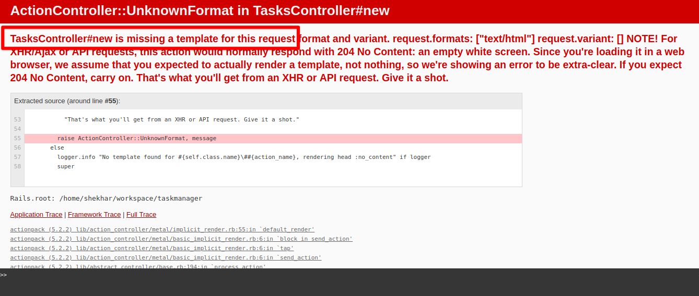

Chapter 4 - Adding tasks through browser
In the last chapter we created TasksController and added index action to it.
4.1 - Introducing link_to
Add the following code to /app/view/tasks/index.html.erb.
<%= link_to 'Add new task' , 'new_task_path' %>
.
.
Now start the server using $rails server and go to the URL http://0.0.0.0:3000/tasks.
Click the link Add new todo.
Now we'll get the error No route matches [GET] "tasks/new"
Open the file /app/config/routes.rb and add following line.
Rails.application.routes.draw do
.
.
.
get 'tasks/new' , to: 'tasks#new'
end
4.2 - Adding new action in the controller
Open /app/controllers/tasks_controller.rb
and add following code.
class TasksController < ApplicationController
def new
@task = Task.new
end
end
Open new task page, and see the error that no template is found.

4.3 - Adding template for new action and rendering the form
Following convention similar to index action,
add a view file new.html.erb inside app/view/tasks directory.
$touch app/views/tasks/new.html.erb`
Add following code inside new.html.erb file.
<div>
<h3>Add new Task</h3>
<%= form_for(@task) do |f| %>
Task description: <%= f.text_field :description %>
</br>
<%= f.submit "Create Task"%>
<% end %>
</div>
form_for is a form helper method provided by Rails.
It is is used to accummulate the data to submit a form
when creating or updating a resource.
In the above case f.submit submits the form.
The entire form data is sent through
a variable named params (hash of data) to the create action of TasksController.
So, let's first add a route for the same.
Add following line to /app/config/routes.rb.
.
.
post '/tasks', to: 'tasks#create'
4.4 - Implementing create action
Open /app/controllers/tasks_controller.rb and
add following code.
.
.
def create
@task = Task.create(task_params)
redirect_to tasks_path
end
private
def task_params
params.require(:task).permit(:description)
end
The flow of all the operations are as following:
- Click the link
Add new todo. Then the router directs the control to the new action. And It will open the form. - After Submitting the form data will go to the
createaction of the task controller. - Now in the Controller, We have written the following code.
private
def task_params
params.require(:task).permit(:description)
end
Here we have defined a method called task_params.
It is a private method and will only be accessible within this controller.
In that function we are permitting which attributes should get passed through the form to create action.
This is for security purpose so that unnecessary attributes should not get updated.
- Now we'll create new record in database using
Task.create(task_params). - Using
redirect_to tasks_pathroute directs the control to theindexaction. We can then see our new todo added to the list.
4.5 - Verify changes in Rails console after submitting the form
We can verify whether an entry has been created in the database after form is submitted.
$ rails console
irb(main):004:0> Task.all
Task Load (0.6ms) SELECT "tasks".* FROM "tasks" LIMIT ? [["LIMIT", 11]]
=> #<ActiveRecord::Relation [#<Task id: 1, description: "This is Task no. 1", created_at: "2019-02-05 10:10:08", updated_at: "2019-02-05 10:10:08">, #<Task id: 2, description: "This is Task no. 2", created_at: "2019-02-05 10:10:16", updated_at: "2019-02-05 10:10:16">, #<Task id: 3, description: "This is Task no. 3", created_at: "2019-02-05 10:10:19", updated_at: "2019-02-05 10:10:19">, #<Task id: 4, description: "This is task no. 4", created_at: "2019-02-05 11:36:57", updated_at: "2019-02-05 11:36:57">]>
irb(main):002:0> Task.count
(0.4ms) SELECT COUNT(*) FROM "tasks"
=> 4
irb(main):003:0>
After the creation of the Task Task.count value should increase by 1 and we can check the all records using Task.all.